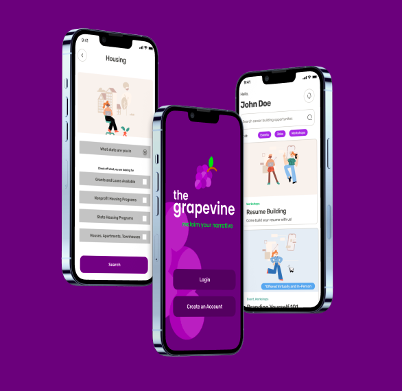

The Grapevine
Figma App Prototype
Project Overview
The Grapevine is an app meant to rehabilitate inmates after they've completed their prison sentence. The purpose of the app is to provide a community based hub where people who’ve served time can: Connect and Network with others, Gain new skills/learn how to market themselves for jobs, Find potential jobs, mentors, or housing assistanceHave a central guide with listings to resources based on their state.

App Mockup
Design Thinking Process
Problem Statement
(1) How to create a social media presence that spotlights the everyday normality and likeness of the people currently and previously incarcerated to those outside the system and
(2) How to help those individuals who are currently or have been incarcerated in finding resources, community, and housing as they re-enter society.
Frame of Inquiry
How might we create a platform for incarcerated individuals So that we can re-humanize them and their experiences In order to provide equality in the courtroom and in life after incarceration.
Research Process
Our inital research consisted of scouring the internet for information on podcasts, articles, and previous interviews that pertained to bringing awareness and light to the experiences of incarcerated individuals both during and after their time in the system.One of the podcasts we looked at directly was the Life After Prison following individuals who have experienced the Alabama prison system. The two most significant podcasts are as follows: Part One: Ex-offenders Face Many Challenges When Reentering Society and Part Three: Ex-felons Often Struggle to Find a Job Our outreach efforts led us to landing an interview with an esteemed prison social media activist named Colin Rea. Through our conversation with Colin, as he is himself a previously incarcerated individual, we were able to ask direct user questions about not only his time and experiences within the system but also his thoughts on the app and social media presence we sought to create.
Low Fidelity Prototype
Final Prototype
The final prototype was created in Figma and included pages where former inmates could find jobs, housing and a community fourm.